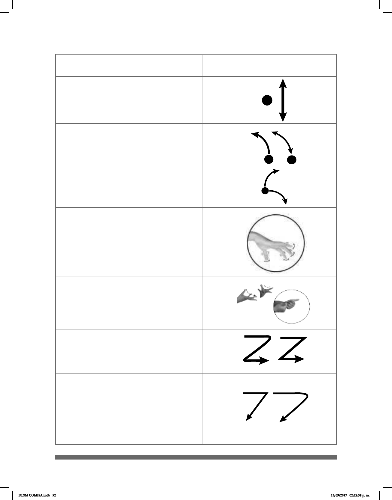

92
Aplanado
(apl)
Zig-zag (zig)
Siete (7)
Deslizamiento
(desl)
Cambios
progresivos en
los dedos (prog)
Apulgarado (p)
Los dedos índice y
medio o índice y pulgar
se tocan y se separan.
El dedo índice sigue la
trayectoria de la Z.
La mano se mueve
formando el número 7.
Los dedos se deslizan
sobre el pulgar.
Cada uno de los dedos
se mueve
alternadamente.
El dedo índice o medio
se desprende con
fuerza del pulgar
cambia de posición, de
exionado a extendido.
MOVIMIENTO
DESCRIPCIÓN DEL
MOVIMIENTO
IMAGEN
DLSM COMISA.indb 92 25/09/2017 02:22:38 p. m.